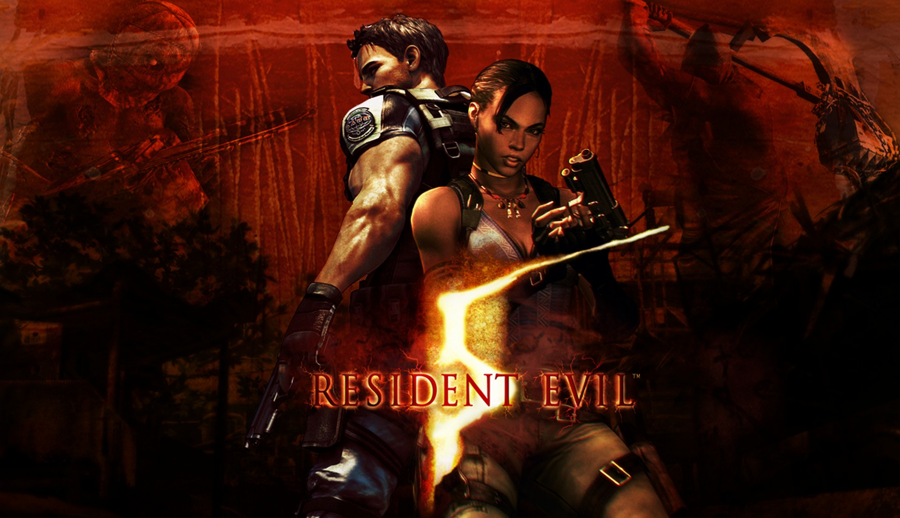

Resident Evil 5
imagem do jogo Resident Evil 5
Resident Evil 5[a] é um jogo eletrônico de tiro em terceira pessoa desenvolvido e publicado pela Capcom. É o sétimo título principal da série Resident Evil, e foi anunciado em 2005 (o mesmo ano em que seu predecessor Resident Evil 4 foi lançado). Resident Evil 5 foi lançado para os consoles PlayStation 3 e Xbox 360 em março de 2009 e para o Microsoft Windows em setembro do mesmo ano. A trama gira em torno da investigação dos agentes da B.S.A.A. Chris Redfield e Sheva Alomar de uma ameaça terrorista em Kijuju, uma região fictícia na África. Redfield logo descobre que precisará confrontar seu passado na forma de seu velho inimigo Albert Wesker e sua ex-parceira Jill Valentine.
A jogabilidade de Resident Evil 5 é semelhante à do jogo anterior, embora seja o primeiro título da série projetado para ter uma jogabilidade cooperativa de dois jogadores. Ele também foi considerado o primeiro jogo da série principal a afastar-se do gênero sobrevivência, com os críticos dizendo que tinha mais semelhanças com um jogo de ação. Capturas de movimento foram usadas para filmar as cutscenes, e foi o primeiro jogo a usar um sistema de câmera virtual. Vários membros da equipe de produção do primeiro Resident Evil trabalharam em Resident Evil 5. A versão de PC foi desenvolvida pela Mercenary Technology.
Resident Evil 5 recebeu uma recepção em grande parte positiva, embora tenha sido criticado por problemas com seus controles. O jogo também recebeu algumas queixas iniciais de racismo, mas uma investigação do British Board of Film Classification considerou as alegações infundadas. Resident Evil 5 foi relançado para o PlayStation 4 e Xbox One em junho de 2016. Em dezembro de 2020, o jogo original vendeu mais de 7,8 milhões de unidades. Uma edição especial do jogo e lançamentos em outras plataformas venderam mais 4,3 milhões de unidades, elevando as vendas totais para 12,1 milhões, tornando-se o jogo mais vendido da franquia Resident Evil, e a sua versão original continuou sendo o lançamento individual da Capcom mais vendido até março de 2018, quando foi superado por Monster Hunter: World. Sua sequência, Resident Evil 6, foi lançada em 2012.
Em 2009,[5] cinco anos após os acontecimentos de Resident Evil 4, Chris Redfield, um ex-membro do Serviço de Resgate e Táticas Especiais (S.T.A.R.S.) e agora parte da Aliança de Avaliação de Segurança em Bioterrorismo (BSAA), é despachado para Kijuju, na África. Ele e sua nova parceira Sheva Alomar têm a tarefa de apreender Ricardo Irving antes que ele venda uma arma bio-orgânica no mercado negro. Quando eles chegam, descobrem que os moradores foram infectados por parasitas que são chamados de "Las Plagas" (já os infectados são chamados de "Majini") e os membros do time alfa da BSAA foram mortos. Chris e Sheva são resgatados pela equipe delta da organização, que conta com Josh Stone, o mentor de Sheva. Nos dados providenciados por este, Chris vê uma fotografia de Jill Valentine, sua antiga parceira, que é dada como morta após um confronto com Albert Wesker. Chris, Sheva e a equipe delta se aproximam de Irving, mas ele escapa com a ajuda de uma figura encapuzada. Irving deixa documentos que levam Chris e Sheva para campos petrolíferos pantanosos. Este lugar é onde a negociação de Irving estava prestes a acontecer, mas logo descobrem que isso era uma distração criada por ele. Quando a dupla tenta se reagrupar com o time delta, eles descobrem que todos foram mortos por uma arma bio-orgânica; Sheva não consegue encontrar Josh entre os mortos. Determinado a saber se Jill ainda está viva, Chris não relata o incidente para a sede.[6]
Entrando no pântano, eles encontram Josh ferido, mas seguro, e rastreiam o barco de Irving com sua ajuda. Ele injeta-se com uma variante do Las Plagas e se transforma em uma besta enorme parecida com um polvo.Chris e Sheva o matam e suas últimas palavras levam-os para uma caverna próxima para saber mais. A caverna é a fonte de uma flor utilizada para criar o vírus progenitor, que levou a produção dos vírus T e G, e tem sido usada para formar uma nova estirpe extremamente poderosa chamada Uroboros. Os dois encontram evidências de que a Tricell, a empresa que financia a BSAA, assumiu um antigo laboratório subterrâneo da Umbrella Corporation e continuou sua pesquisa. Na instalação, eles descobrem que há milhares de cápsulas com cobaias humanas. Embora Chris ache que uma delas é de Valentine, ela está vazia.